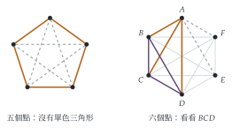

STEP I 1989，第 4 題
繼續之前，請先閱讀題目（原題為英文）。題目載於 STEP Support Programme 的題目資料庫： step.maths.org/questions/89-s1-q4
引子
在任何一個六人派對上，要麼有三個人彼此都認識，要麼有三個人彼此都不認識。無論這六個人是誰，這一點都必定成立。換成五個人，就沒有這個保證了。這個小小的事實是拉姆齊定理（Ramsey’s theorem）的第一個情形，它道出了一條貫穿現代組合數學（combinatorics）的原則：完全的無序是不可能的。任何足夠大的結構，無論怎樣着色或排列，都必定包含一個高度有序的部分。
證明只需四行。但順理成章的下一個問題（要多少人才能保證有四個互相認識的人或四個互不認識的人？五個呢？）卻通向數學中一些最困難的未解難題。
動筆之前
那六個點之所以重要，只在於哪些點對以哪種顏色相連：幾何只會令人分心。一共有多少條線段？每個點又連出多少條？
一共有 \(\binom{6}{2} = 15\) 條線段，每個點連出 \(5\) 條。（一般位置（general position）這個條件只是確保任意三點都構成一個真正的三角形。這道題其實是關於六個頂點上的完全圖（complete graph） \(K_6\)，它的邊以兩種顏色着色。）
逐步解題
階段 1 五條線段，兩種顏色
從 \(A\) 連出五條線段，每條不是金色就是銀色。關於它們的顏色，你可以肯定甚麼？
其中至少有三條顏色相同。假如金色的至多兩條，銀色的也至多兩條，那麼線段至多只有四條。這就是鴿巢原理（pigeonhole principle）：把五件物件放進兩個盒子，必有一個盒子裏至少有三件。不妨設（有需要時把兩種顏色的名稱對調）\(AB\)、\(AC\) 和 \(AD\) 全是金色。
階段 2 看看另一端
現在看看三角形 \(BCD\)。如果它有任何一條邊是金色，會怎樣？如果一條都不是呢？
如果三角形 \(BCD\) 有任何一條邊是金色，比如 \(BC\)，那麼 \(ABC\) 的三條邊 \(AB\)、\(AC\) 和 \(BC\) 全是金色。如果 \(BCD\) 沒有一條邊是金色，那麼 \(BC\)、\(CD\) 和 \(DB\) 全是銀色，\(BCD\) 就是一個銀色三角形。無論哪種情況，都有一個單色三角形（圖 9.2.1，右）。■
階段 3 五個點並不足夠
若只有五個點，每個點只連出四條線段。怎樣着色，才能使每個點連出的線段恰好每種顏色各兩條？
把五個點放成一個正五邊形（如果想要它們處於一般位置，可以把它們稍微提離平面）。把五邊形的五條邊塗成金色，五條對角線塗成銀色（圖 9.2.1，左）。金色的邊構成一個五圈，當中沒有三角形；銀色的邊構成一個五角星，它同樣是一個五圈，當中也沒有三角形。所以並沒有單色三角形。■

回顧
撇除無關的東西。空間中的點變成了一個着色的圖；重要的只有邊的顏色。
鴿巢原理。五條邊、兩種顏色，迫使其中三條同色。
對合適的對象分情況討論。一旦找到三條金色的邊，它們另一端的三角形就決定了一切。
緊確性（sharpness）。五邊形的例子說明「六」這個數不能再降低。一條好的定理，總會附帶一個例子，說明它已是最佳的結果。
背後的數學
拉姆齊數
拉姆齊數（Ramsey number） \(R(s, t)\) 是滿足以下條件的最小的 \(N\)：把 \(K_N\) 的邊以金、銀兩色着色，無論怎樣着色，都必定包含一個金色的 \(K_s\)（即 \(s\) 個點，它們之間的所有邊都是金色）或一個銀色的 \(K_t\)。這道題已證明了 \(R(3, 3) = 6\)：六個點必定可行，而五邊形說明五個點並不可行。
弗蘭克·拉姆齊（Frank Ramsey）在 1928 年證明了這些數必定存在：對任意的 \(s\) 和 \(t\)，總有某個 \(N\) 符合要求。證明用的是歸納法（induction），把上面的論證加以推廣，並得出 \(R(s, t) \leq R(s - 1, t) + R(s, t - 1)\)。但要找出確切的數值卻異常困難： \[R(3, 3) = 6, \qquad R(4, 4) = 18, \qquad 43 \leq R(5, 5) \leq 46.\] \(R(4, 4)\) 的值是在 1955 年求得的。儘管已動用電腦作大規模搜尋，\(R(5, 5)\) 至今仍然未知；上界 \(46\) 到 2024 年才獲證明。電腦無法直接檢查 \(K_{43}\) 的每一種着色：一共有 \(2^{903}\) 種，遠遠多於宇宙中原子的數目。
保羅·艾狄胥（Paul Erdős）對拉姆齊理論（Ramsey theory）發展的貢獻無人能及，他很喜歡講這個故事。假設外星人入侵地球，並威脅說除非我們告訴他們 \(R(5, 5)\) 的值，否則就毀滅地球。我們應當調動所有電腦和數學家，這樣或許能把它找出來。但假如他們問的是 \(R(6, 6)\)，我們就應該設法消滅外星人。艾狄胥還在 1947 年證明了 \(R(k, k) > 2^{k/2}\)，所用的方法令人驚歎：他證明了，在少於 \(2^{k/2}\) 個點上隨機着色的圖，有正的概率不包含任何單色的 \(K_k\)，所以好的着色必定存在，儘管沒有人知道怎樣把它構造出來。這種概率方法（probabilistic method）如今是組合數學中最強大的工具之一。
亂中有序
拉姆齊定理有很多近親，它們表達的都是同一個想法：足夠大的結構無法避開秩序。范德瓦爾登定理（Van der Waerden’s theorem）說，如果把所有整數以有限種顏色着色，就存在任意長的單色等差數列（arithmetic progression）。艾狄胥–塞凱賴什定理（Erdős–Szekeres theorem）說，任何由 \(n^2 + 1\) 個相異的數組成的數列，都包含一個長度為 \(n + 1\) 的遞增或遞減子數列（subsequence）。而拉姆齊本人感興趣的是一個邏輯問題：他是在一篇關於判定邏輯命題真假的論文中，把這條定理作為引理（lemma）來證明的。
思維技巧
如果把多於 \(kn\) 件物件放進 \(n\) 個盒子，則必有一個盒子裏有多於 \(k\) 件物件。
這條原理顯而易見，但要用得好卻是一門藝術：功夫在於選定甚麼是物件、甚麼是盒子。在這道題中，物件是某一點上的五條邊，盒子是兩種顏色。在大學裏，鴿巢原理的論證會出現在數論（以分數逼近無理數）、分析（波爾查諾–魏爾斯特拉斯定理（Bolzano–Weierstrass theorem））之中，更遍及整個組合數學。
延伸練習
至少兩個。證明在 \(K_6\) 的任何雙色着色中，其實至少有兩個單色三角形。（提示：數一數「雙色角」的數目，即在同一個頂點上的一對不同顏色的邊。若一個點有 \(g\) 條金色的邊和 \(5 - g\) 條銀色的邊，它就是 \(g(5 - g) \leq 6\) 個這樣的角的頂點。每個非單色的三角形恰好包含兩個這樣的角。）
三種顏色。如果把 \(K_{17}\) 的邊以三種顏色着色，證明其中有一個單色三角形。（提示：有一個點至少有六條同色的邊。）
三或四。證明 \(R(3, 4) \leq 10\)：在 \(K_{10}\) 的任何金、銀着色中，都有一個金色三角形或一個銀色的 \(K_4\)。（提示：一個點要麼至少有 \(4\) 條金色的邊，要麼至少有 \(6\) 條銀色的邊。）事實上 \(R(3, 4) = 9\)。
單調子數列。就 \(n = 2\) 的情形證明艾狄胥–塞凱賴什定理：任何由 \(5\) 個相異的數組成的數列，都包含一個長度為 \(3\) 的遞增或遞減子數列。找出一個由 \(4\) 個數組成、兩者皆無的數列。
延伸閱讀
Miklós Bóna, A Walk Through Combinatorics（World Scientific），組合數學入門書，可讀其中關於鴿巢原理和拉姆齊理論的章節。
Ronald Graham & Joel Spencer,「Ramsey theory」，Scientific American（1990 年 7 月）。由兩位頂尖研究者撰寫的科普介紹。
Noga Alon & Joel Spencer, The Probabilistic Method（Wiley）。講述艾狄胥這套方法的標準著作；第一章不難讀懂。
Paul Hoffman, The Man Who Loved Only Numbers（Fourth Estate）。艾狄胥的傳記。